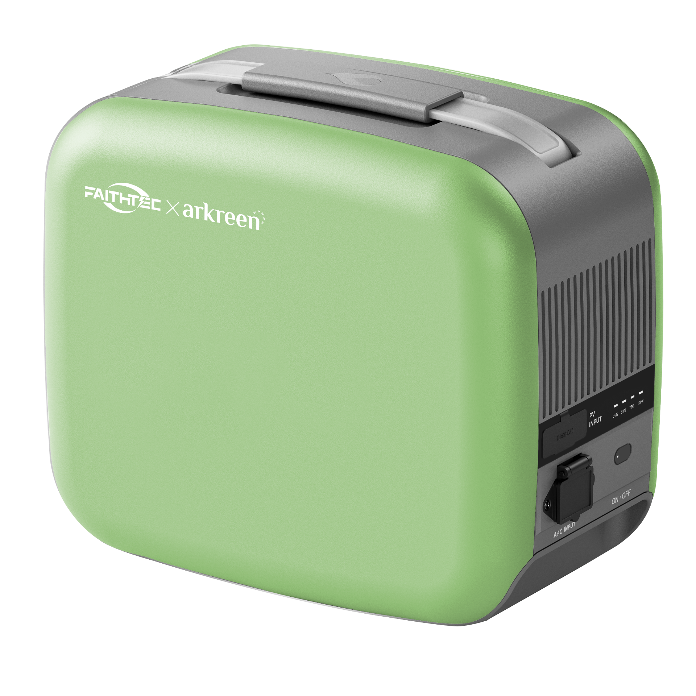
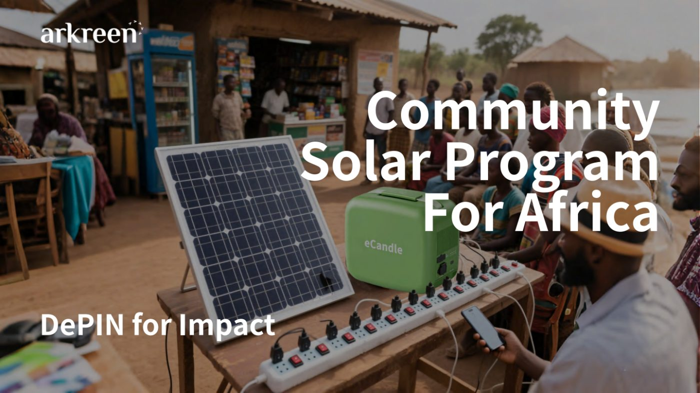

DePIN for Impact · Energy Node
eCandle is the first DePIN for Impact energy node — turning real-world, off-grid energy demand into programmable, recordable, and distributable cashflow, settled on-chain in stablecoins.

Why eCandle exists
Stablecoins need a credible path from on-chain liquidity to real-world utility. Off-grid communities need reliable, affordable, sustainable energy. Today these two needs sit on opposite sides of a gap.
The supply side
but in the places where capital and financial access are concentrated, real infrastructure demand is often already met, or missing entirely.
The demand side
but where real energy demand is most acute, capital and financial access are scarce, and reliable infrastructure never gets built.
Live deployment

What it is
A 200W panel captures energy at the point of need — no grid connection required.
A 1 kWh battery holds power for lighting, charging, and small-merchant loads after dark.
Metered, smart output lets users pay tiny amounts to access power — by the charge, rental, or shared use.
Deployed and maintained by local operators who own the relationship with the community.
Every payment flows directly into smart contracts — no centralized billing, no manual reconciliation.
It is not just a solar battery. It is a real-world stablecoin utility primitive — a programmable energy revenue node.
How it works
eCandle connects global capital, local operations, real energy demand, and stablecoin settlement into one replicable infrastructure loop.
On-chain impact crowdfunding and ecosystem co-initiation fund the deployment of new eCandle units — capital builders back real hardware, not narratives.
Units are deployed into off-grid households, small merchants, and community nodes through trusted local operators who install and maintain them.
Users access energy through shared-use, rental, or PayGo models — generating a stream of recurring stablecoin micropayments from real demand.
Payments and usage data are recorded, aggregated, and distributed by smart contracts — enabling transparent revenue sharing, future RWA structures, and long-term participation.
Who participates
Three roles, one network — connecting global capital with local execution and real demand.
Global · Capex
Provide the upfront capital for physical infrastructure. Receive transparent, on-chain revenue distributions as units earn from real usage.
Local · Opex
Handle site selection, installation, maintenance, and day-to-day operation. Own the community relationship and share in the cashflow they generate.
Community · Demand
Off-grid households and small merchants access reliable, affordable power — paying small amounts of stablecoins via mobile phones, only for what they use.
Join the loop
Back the first eCandle deployments as a capital builder — and earn from a stablecoin value loop validated by real devices, real users, and real recurring payments.